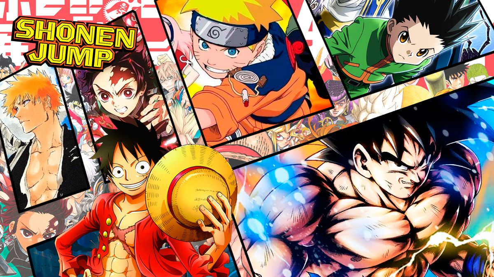
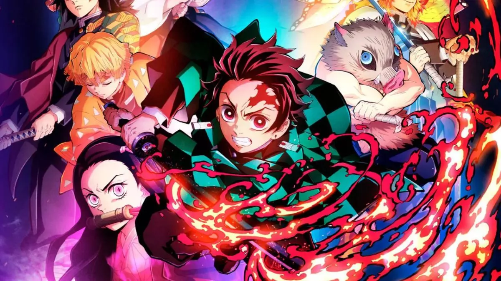

Los mangas shōnen se caracterizan por ser series con grandes dosis de acción,a menudo situaciones humorísticas con protagonistas masculinos, como el manga "Dragon Ball" de Akira Toriyama. El compañerismo entre adolescentes o adultos de un equipo de combate, también suele subrayarse en un shōnen. También suele haber personajes atractivos femeninos (como en el bishōjo o fanservice), aunque no siempre. El arte de estilo de shōnen en general es menos florido que el de shōjo, aunque esto varía mucho entre los mangakas. Shōnen no es un género específico de manga, sino el término demográfico que se usa para referirse al manga y anime dirigido especialmente a hombres jóvenes.
El seinen (青年? lit. «juventud») son cómics japoneses enfocados a hombres adultos. En japonés, la palabra seinen significa literalmente "juventud", pero el término "seinen manga" también es usado para describir las audiencias de revistas como Shūkan Young Jump o Young Magazine, las cuales específicamente apuntan hacia intereses masculinos, y son dirigidos a adolescentes mayores y adultos jóvenes. Al igual que el manga shōnen, éste cubre un amplio número de temáticas, aunque ciertos temas sexuales son algo más prevalentes en el seinen.
El josei (女性?), también conocido como redīsu komikkusu (レディースコミックス lit. «cómics para mujeres»?) o redikomi (レディコミ?) es una demografía del manga y anime dirigido especialmente para mujeres adultas. El equivalente masculino de este género es el seinen. En japonés, la palabra josei significa solamente "femenino" y no presenta ninguna connotación sexual.